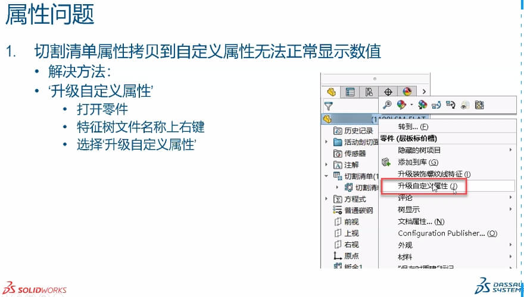

升级自定义属性
SOLIDWORKS 2017 或更早版本中创建的文件的自定义属性，是旧的属性结构。在之后版本会出现更新需要在设计树，对文件右键-升级自定义属性。
在旧文件上运行升级自定义属性时，其自定义属性将升级到新的体系结构。 升级后，以下功能可用于旧文件：
- 自定义属性对话框中的链接列
- 配置特定的切割清单和自定义属性
- 文件属性中的方程式
- 增强的配置特定属性对话框
方法1：手动升级
1
方法2：批量升级
API (IModelDocExtension:: UpgradeCustomProps)